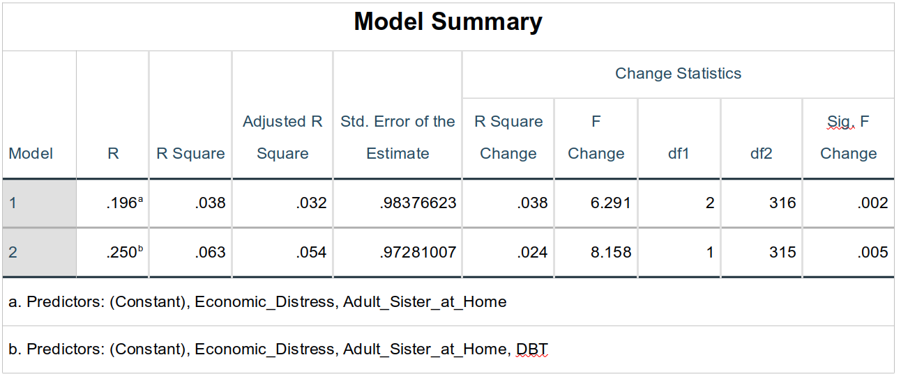
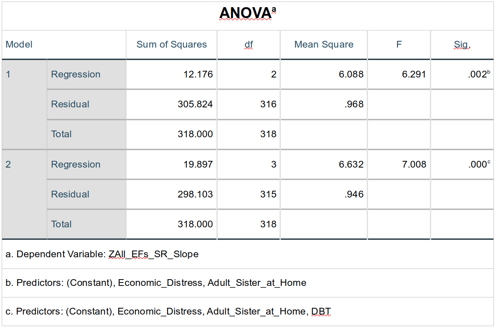
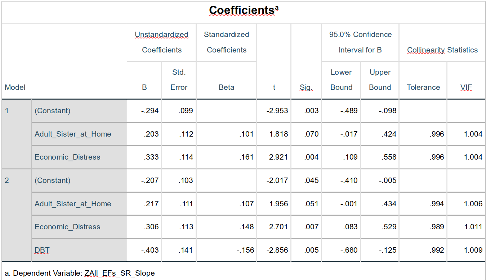
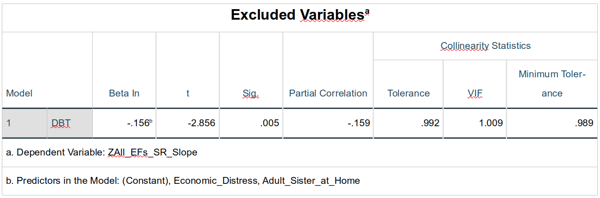
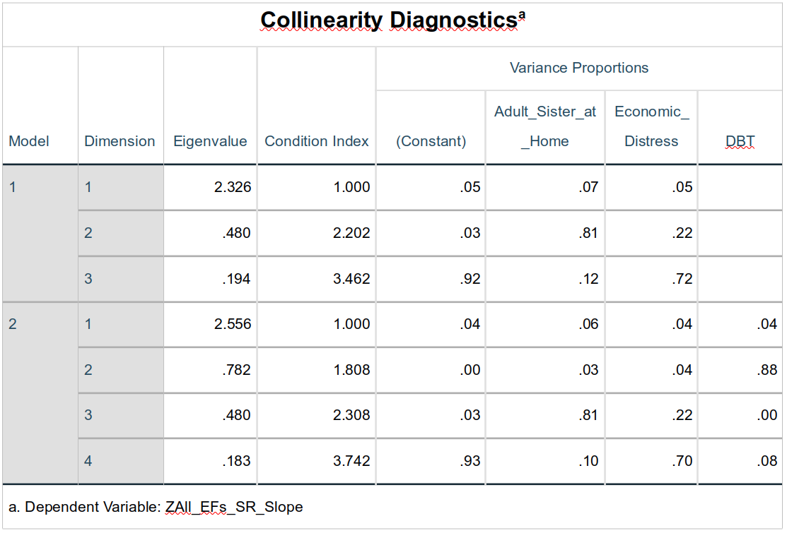

8 Linear Regression Modeling with SPSS, Part 1: Introduction
Statistics: A subject which most statisticians find difficult but which many physicians are experts on. – Stephen Senn, Statistical Issues in Drug Development, p. 4
8.1 Overview
This chapter covers the relationship between partial correlations and linear regressions before exploring and interpreting results of linear regressions conducted on the adolescent executive functioning data.
8.2 Core Concepts
8.2.1 Linear Relationships
Very few relationships in healthcare are truly linear. There are sweet spots in how much or what sorts of care to give, sometimes diminishing returns, sometimes growing returns. This is, in fact, true for much outside of the physical sciences; even the effect of intelligence on income & wealth appears to have a non-linear (diminshing) effect.
And yet, it many cases it’s good enough to assume relationships are linear. It can account for much of the relationship while being easy to model statistically. Even if we suspect that the relationships between predictors and outcome are non-linear, we often first test those relationships against a model that assumes linearity because that may well still be sufficient. In addition, seeing how well the data are fit by a linear model lets us then subsequently see how much better a given non-linear relationship explains it: We can even quantify and test the significance of the improvement of a non-linear model over a linear one.
8.2.2 Consider Removing the Intercept
O.K., removing the intercept isn’t a core concept, but it can be a good idea nonetheless. One of the best predictors of the future is the past1, so simply knowing where participants are when they start participating is often among the most efficient and powerful ways of knowing where they will be later on in the study.
But wouldn’t it be nice to know what about their initial state matters most later one? Leaving the intercept in lets it “suck up” a lot of information that could otherwise be explained by other terms in your model. Removing the intercept may allow that information to “flow back” into other predictors to allow those other predictors to explain more of your outcome.
Removing the intercept also frees up the degree of freedom used to estimate its value. This gives our other analyses a bit more power. No, that’s not usually a lot, but it does help us maximize the information in our data, making us that much more efficient and conscious of the real value of data.
8.3 Introduction to Linear Regression Models
Correlation and linear regression are closely related tools that both describe the linear association between two variables. Correlations quantify the strength and direction of a linear relationship without making assumptions about the sources of error. A linear regression, on the other hand, models that relationship explicitly, allowing us to quantify and test different parts of that relationship. Linear regressions also allow us to model more complex relationships and—or course—to test the associations between more than two variables.
Throughout this tutorial, we will use a subset of variables from the Add Health study, which measured a set of “rich demographic, social, familial, behavioral, psychosocial, cognitive, and health survey data” for over 20,000 people in five waves of data collection from 1995 to 2018. It’s also worth investigating since their website now bears the mark of MAGA, stating that “[o]n March 31, 2025, as a sponsor of this project, NIH requested that the following language be added to this website: This repository is under review for potential modification in compliance with Administration directives.” I’ve preserved some of the data here; we will be using that data now with SPSS (v. 31). More about using SPSS through CUNY’s Apporto service is in sec-apporto.
{kind=link}
8.3.1 Correlation vs. Simple Linear Regression
Let’s begin by comparing the results of a simple linear regression against the results of a zero-order correlation containing the same variables. A simple linear regression is a linear regression that contains only one predictor (like a one-way ANOVA).
Correlation
Choose
Analyzefrom the menu bar (from any window), and click onCorrelate > Bivariate2.Select Participated in DBT [DBT] and Ball Executive Functions Slope – Student Self-Report [All_EFs_SR_Slope] to add to the Variables field.
- This is a point-biserial correlation (i.e., a dichotomous variable correlated with a continuous), but the formula for that derives to be computationally the same as that for the Pearson, so select (or leave selected) that option under
Correlation Coefficients. - The default α-value for rejecting the null in SPSS is .05. i.e., we are accepting a 5% chance that any given hypothesis test will be a Type 1 error—here that the correlation is equal to zero (and the Type I error being that we think it isn’t equal to zero when in fact it is). We don’t really have an a priori reason to believe that this correlation will be above or below zero, so we will divide that α = .05 into two pieces, letting us test if it is above zero 2.5% of the time and below zero 2.5% of the time. This is called a two-tailed test, so let’s leave the
Test of SignificancetoTwo-tailed. - Under the
Optionsdialogue, we can includeMeans and standard deviationsunderStatistics. We also should leave theMissing Valuesoption toExclude cases pairwise. Pairwise exclusion in SPSS means that a given case (row) will be excluded from a given analysis if that row is missing data relevant to that analysis per se.Listwiseexclusion in SPSS means that a row will be excluded if any data are missing for that case in any of the variables selected for that family of analyses—even if one values relevant to that particular analysis are both present. Listwise exclusion is nearly always too conservative a criterion, thus opening us up to biases in our analysis that come from biases introduced by variables that aren’t even in that analysis.
- This is a point-biserial correlation (i.e., a dichotomous variable correlated with a continuous), but the formula for that derives to be computationally the same as that for the Pearson, so select (or leave selected) that option under
In the
Descriptive StatisticstheOutputwindow, we see that mean for theDBTvariable is .19; since this is a dummy variable (where1= participating and0= not participating), this is also the proportion of cases that participated in the program: 19% of the students here participated in the DBT program.In the
Correlationstable, we see that the correlation betweenDBTandAll_EFs_SR_Slopeis -.165. This indicates that as we go from a DBT score of 0 to 1, the slope changes -.1653. TheSig. (2--tailed)row in the table indicates that the p-value for that correlation is .003, which is less than the α–level we established (α = .05 / 2 = .025 for each tail), making this correlation significant3. We could write this in a Results section as:
The point-biserial correlation between DBT participation and changes in all executive functions was significant (rpb = -.165, df = 326, p = .003), indicating that participating in the DBT program was associated with significantly more negative slopes (i.e., significantly greater improvements) in total executive function scores.
Which attempts to explain the relationship in simply terms that rely on little in-article jargon and acronyms. The support for this plainer-English description is supported (parenthetically) by the numerical statistics.
Linear Regression
Remember that in simple correlations, we assume that unique variance / error comes equally from both variables. We formalize this mathematically by having the variance they share—their covariance—divided by the unshared variance from both variables:
\[\text{Correlation} = \frac{\text{Cov}{({X,Y})}}{\text{Var}{(X)}\text{Var}{(Y)}}\]
Unlike a correlation, in a linear regression, unique variance / error is assumed to come from only the predictor variable(s):
\[Y = bX + e\]
where \(b\) is the slope of the regression line that best fits the cluster of \(X\) values plotted against \(Y\) and \(e\) is the average distance4 of each individual \(X\) value from that line—the variance unique to \(X\) that is relegated to error:

Although our assumptions are different, we are still doing the same basic function: determining a line of best fit computed by minimizing the unique variance in our data—here in the values of our criterion, \(X\)5.
Separating out error like is done in a linear regression will eventually allow us more flexibility in how we deal with error. For now, I simply want to show the similarity between a correlation and a linear regression.
In whatever window you have active, click
Analyze > Regression > Linear....Add
ZAll_EFs_SR_Slopeto theDependentfield andDBTto theIndependent(s)field. SPSS is calling the outcome “Dependent” and the predictor(s) “Independent(s)”, as in DVs and IVs.Under
Statistics, haveEstimates and Confidence intervalsselected underRegression Coefficients(the latter since confidence intervals are slowly replacing up-and-down significance tests), andModel fit,Part and partial correlations, and—might as well—Descriptivesalso selected. For now, leaveR squared changeunselected.(
Casewise diagnosticslets you evaluate whether there are extreme outliers in the data that may be skewing the results.Durbin-Watsontests whether there is nonignorable autocorrelation between the errors of longitudinal data, with a value of “2” indicating ignorable autocorrelation and values approaching either 0 or 4 indicating that error values are not independent of each other and thus that, e.g., one should consider the nested nature of the data, q.v. sec-mlm.)Under
Options, selectExclude cases pairwiseunderMissing valuesfor the reasons discussed above;Replace with meanis a defensible strategy for handling missing data, although multiple imputation would be preferred in all ways … were it easy performed in SPSS.We will not be use any
Stepping Method Criteria, so the default (or really any values since this doesn’t apply) are fine.Finally, leave
Include constant in equationselected. The constant of which they speak is the intercept since not all of our variables are standardized.We will ignore, e.g., the
Methodof entering or removing terms from the model for now.
For Zscore: All Executive Functions Slope -- Student Self-Report in the Descriptive Statistics table in the Output window, we see that the Mean is .00000000 and the Std Deviation is 1.00000000, as they should be since that variable is indeed standardized here6.
For Participation in DBT Program?, the mean is .19 (sample size is 670); since this is a dummy variable, this means that 19% of the cases had 1s, i.e., that 19% of the students participated. The results for the Correlation also return the correlation (-.165) and that it is significant.
After the Variables Entered/Removed table (which is not relevant now), the results present a Model Summary table. This table presents statistics about how well the model overall performs when trying to fit the data we fed it. Remember how one way of thinking about linear regression models is that they try to minimize unexplained variance in the data—that they try to account for as much of the variance / information in the data as possible. The R and R Square values in this table do just that; they describe how much variance in the data set are accounted for by this particular model (containing—for now—simply whether the student participated in the DBT program). We see from this table that the R-value is .165. This, of course, is the same absolute value as the correlation between DBT and All_EFs_SR_Slope. A linear regression will generate the same (or nearly same) values as a correlation on those same variables—the difference, though, is in the assumptions we’re making about the data: Correlations assume error is shared equally whereas linear regressions separate out error and explicitly model it s a term among the predictors.
The R Square value in that table is just the R value squared. Squaring a correlation coefficient (i.e., computing r2 from r) computes the shared variance between the two variables. Similarly, R Square (i.e., R2) computes the variance within that data set that is accounted for by this model. Capital R2 is used to denote the variance in the data accounted for by all of the model terms—intercept, main effects, interactions, etc., but not error. Lower-case r2 is used to denote the variance shared by just two variables—not the whole model. (The Adjusted R Square reduces the value a bit for each term added to the model since one can improve the R2 of a model even by adding non-significant or uninteresting terms to it.)
The next table, ANOVA, presents the results of the linear regression in terms of just that. This presents the familiar Sum of Squares for the DBT term (when DBT = 1, as it shows in the left-most column) as well as the Residual (Sum of Squares) which you should now recognize is the unexplained variance. The F-score and p-value (Sig.) both indicate the significance of the DBT term.
One more thing to note about the ANOVA table … is that there even is one: The presence here of an ANOVA table—when we didn’t explicitly tell SPSS to run an ANOVA—underlines the fact that what we’re doing in a linear regression is the same as we would do in an ANOVA. Again, one reason to prefer a linear regression over an ANOVA is because of the greater flexibility of a linear regression. Of course, if you don’t need this greater flexibility, then this also means that running an ANOVA is just fine if that’s all you need; in addition, ANOVA source tables may also be more accessible to audiences without quite as much sophisticated understanding of statistics as you now have.
The results of the ANOVA, correlation, and linear regression analyses are all quite similar. Indeed—to the extent that our underlying assumptions hold—the results of all three analyses will become even more similar as the sample size increases. Two things to infer from this that are most relevant here are:
Assumptions matter. Although some assumptions (monotonicity of the data and that data are independently and identically distributed) tend to be more important than others (strict adherence to normality), knowing how well and in what ways our data meet our basic assumptions affect all analyses we do and all inferences we make from them. This remains true for data of all sizes—even if some assumptions become more important as sample size increases and others tend to become less important (e.g., sampling bias becomes more important; adherence to normality even less).
(Nearly all) linear regressions do the same thing. The fundamental goal of a correlation, ANOVA, multilevel model, logistic regression, and structural equation model are the same. They all test a linear relationship between the variables by computing a slope, determining that slope is determined by computing a loss-limiting functioning (e.g., ordinary least squares or maximum likelihood), and parceling out variance into that which is explained by the model and that which remains unexplained (“error”).
In fact, a main goal of demonstrating the relationship between, e.g., a one-way ANOVA and a zero-order correlation is to show that they can be seen as members of the same family of analyses.
Semipartial Correlation vs. Multivariate Linear Regression
Remember (e.g., from sec-partial_semipartial_correlations) that a semipartial correlation removes the effect of a third variable7 from one of the two variables in a correlation. Remember too that as odd as this may seem a thing to do, in fact it’s done all the time: It’s the basis for having two (or more) predictors in a linear model; the effects of each predictor are (mathematically) isolated from each other so that the effect of one is independent of the effect of the other.
If the two predictors are strongly correlated with each other, then the model will perform quite differently if only one is included versus if both are. Exactly in what way it will “act differently” is hard to anticipate ahead of time, but act differently it will. Let’s look at examples of that now.
8.3.2 Conducting a Multivariate Linear Regression Using Forward Term Selection
A multivariate linear regression is just a linear regression that has two or more predictors.
- In SPSS, compute the correlation between
ZAll_EFs_SR_SlopeandAdult_Sister_at_Home(a dummy variable that indicates whether the teens if they lived with a sister who was over 18 years old). You’ll see that rbp = -.11 (df = 319, p = .048). This correlation is small but significant (and, yes, cherry-picked for this example). - Look, too, at the correlations between
DBTand bothZAll_EFs_SR_SlopeandAdult_Sister_at_Home. The zero-order correlation betweenDBTandZAll_EFs_SR_Slopeis -.165 and betweenDBTandAdult_Sister_at_Homeis .04. Of course, this correlation betweenDBTandAdult_Sister_at_Homeis not theoretically interesting since there is no reason to believe that participating in the DBT program really affects how many adult sisters one has or vice versa; nonetheless, it serves well as an example of how linear models change when correlated predictors are both included. - Now, let us rerun the linear regression predicting
ZAll_EFs_SR_Slopewith DBT, but this time also add inAdult_Sister_at_Home. I.e., go toAnalyze > Regression > Linear..., putZAll_EFs_SR_Slopein the Dependent field, and put bothDBTandAdult_Sister_at_Homein theIndependent(s)field. - Under
Statistics..., make sureEstimates,Model fit,R squared change, andCollinearity diagnosticsare all selected. These play into what we will be doing now. - Leave everything under
Optionsthe same, viz., leave theStepping Method Criteriato the default, keepInclude constant in equationselected, andExclude cases pairwise. Most of these inform our investigation here, too. - Now, turn your attention to the
Method:drop-down menu right under theIndependent(s)field. This is the method SPSS will use to add or remove terms to the model. I’ll explain this further soon, but for right now, selectForward Selection. - Hit
OK.
Results
Variables Entered/Removed and the “Stepwise” Strategy
 The
The Variables Entered/Removed table reports which variables are either entered or removed based on the Method: we selected to determine which variables ought to be selected for our final model. Let me first explain what is being done here and why before we explore more particularly the methods used.
Second, we could think of the whole model and whether a predictor makes a significant contribution to the overall fit of the model. This latter method will (usually) produce the same results as the former, but has the advantages of both allowing us to test significance in more ways and of allowing us to test and consider contributions more flexibly and precisely.
What SPSS is doing here is based on that second approach. It is trying to build the best model, picking from those we suggested to find the combination that has the largest number of significant terms8. Here, the only possible predictors SPSS could choose from are just DBT and Adult_Sister_at_Home. However, when exploring larger sets of data, there may be many more potential variables to add.
The general strategy SPSS presumes we are following is to choose which variable(s) to add or remove from a model based on whether that variable significantly changes the fit of the overall model. One advantage of this strategy is that is considers whether predictors themselves are inter-correlated. If two predictors are strongly correlated, then it’s unlikely that both will be added to the model; instead, the one that is more strongly predictive of the criterion will be added and the other one won’t make the cut since most of its relationship with the criterion will be accounted for by the other predictor that made the cut first. This tends to create a more parsimonious model that is less affected by multicollinearity and yet is still effective.
SPSS, in fact, offers five methods for deciding which predictors to add or remove9 given this general strategy:
Enter:The most theory-driven of the methods,Enterlets one add “block” or set of predictors and then add another block, continuing as one wants. In this way, one could, e.g., first add in all of the variables that are not of direct but that one expects will be important to control for when finally looking at the (other) predictors that are of theoretical interest; in other words, one could create a base model with the first block, and then in the second block start adding predictors of theoretical interest to see if those theoretically-interesting predictors prove to be important after all. This is the method I use nearly exclusively.Remove:A similar strategy toEnter, SPSS first starts with all chosen predictors added to the model. It then removes those listed in the first block, then those listed in the second block, and continues until there are no more predictors (except the intercept, if present).Enteris used to test whether adding a block of predicts improves the model;Removeis used to test whether removing a block of predictors worsened the model. It’s a subtle distinction, and the choice of which to use is one determines based on one’s theory and research questions.Stepwise:A method that both adds and removes predictors. SPSS does this in “steps.” In the first step, SPSS starts with no predictors in the model (except the intercept); it then tries out each predictor, seeing which of them would be most significant (has the smallest p-value10); if that predictor with the smallest p-value is also sufficiently significant11, then it is indeed added to the model in that first step.In the second step, SPSS first tries out all of the variables still not in the model, chooses the one with the smallest p-value, and adds that to the model if its p-value is smaller than the pre-set cut-off. Then, still in the second step, SPSS goes through the predictors that have been added to the model; if any of them have become sufficiently non-significant, SPSS removes them from the model. If no predictors were added or removed during the second step (if none met the criteria for entry or removal), then SPSS stops and reports this as the final model.
The third and any subsequent steps follow the same procedure as the second step, explained just above. Note that it is possible (unlikely, but possible) that a variable that was previously removed is later re-entered as SPSS fiddles around finding the best set of predictors.
Forward:This method is likeStepwise, but in which predictors are only added (if they meet the pre-set cut-off) at each step; none are removed. (This is the method we used here because it’s simple and worked for what I wanted to show.)Backward:This method is also likeStepwise; here SPSS starts with all chosen predictors in the model, and then only removes any at each step, stopping either when no more meet the pre-set cut-off or when there are no more predictors left in it.
Model Summary

This is the meat of the output. This table shows the performance of the overall model—not the individual predictors—at each step. The model statistics for the first step are given in the row labeled 1 in the Model column. Notice that the R-value for the first model (which contains only DBT) is the same as the zero-order correlation between DBT and ZAll_EFs_SR_Slope, again showing the similarity of the processes (again, as long as the same assumptions hold).
Remember that squaring a correlation produces the proportion of variance explained. Similarly the model R2 (here R Square) indicates the proportion of variance in the criterion explained by this model. The Adjusted R Square is the model R2 adjusted for the number of terms in the model (predictors as well as intercept—if present—and error); as you can infer from the values here, it reduces the R2 ; this helps protect against inflated the model R2 simply adding a bunch of terms that have very little—if any—relationship with the criterion.
Adjusted R2 also adjusted for the sample size; larger sample sizes are adjusted less since it is argued that they better represent the overall population. Given these adjustments, adjusted R2 values are best used as descriptive statistics when reporting how much, e.g., your model’s results and performance may apply to instances outside of your study—when making recommendations to the field, for example. However, adjusted R2 does not serve well for comparing between models within your analysis, as we will soon do.
The Std. Error of the Estimate (standard error of the estimate, also called the root mean square error) is the standard deviation of the error term in the model; this simply shows how much residual error (variance) there is in the model. Our R2 value is small—only accounting for 2.7% of the variance in EF change scores—so it’s not surprising that there is a lot of residual error; this column reminds us that that is so.
The R Square Change is how much change there is in the R Square value. For the first model, you’ll see that the R Square Change value is the same as the R Square value. Personally, I find this confusing since it’s not really a change in R2, but simply the initial R2 value. The F Change, dfs, and Sig. F Change for this first row are also simply the significance tests for this first model—not the change in the model. They do show that the model is significant (p = .003).
The second row (where Model is 2) indeed shows the change in model fit made by adding Adult_Sister_at_Home to the model that already contains DBT. Now, the R, R Square, Adjusted R Square, and Std. Error of the Estimate values are for the whole model (showing that the model with both predictors does account for more of the variance in ZAll_EFs_SR_Slope than the one only containing DBT—even when adjusting for the fact there are simple more predictors there), but the other columns are all analyzing the change in the R2 value between the first and second models. Although the change in R2 is small (.041 – .027 = .014), it is significant (F1, 316 = 4.51, p = .034); adding the Adult_Sister_at_Home term improved our model—and thus our understanding of EF changes; DBT and Adult_Sister_at_Home both make significant contributions to our understanding of changes in student-reported executive functioning, and these predictors—although mildly correlated (rpb = .04)—make otherwise unique contributions to predictions of EF changes.
It’s worth reiterating how testing for relationships in this way allows for more precise and nuanced insights into the relationships between our variables. We still test whether both predictors are significant, but do so through how much they contribute to our overall understanding: It’s not just if a term is significant, but how much it matters in light of everything else we know.
ANOVA Table

Finally something familiar. The ANOVA table presents an ANOVA run on each of the models. This table doesn’t, however, show the tests of each of the terms in the model—just the overall model As such, this table really does little more than what was shown by the F-scores in the Model Summary table, just above.
Coefficients

The Coefficients table also takes us back to more familiar ground, testing the effects of the predictor terms per se. Given how we’ve coded our variables, this table is a bit more confusing than it would otherwise be, though: Both DBT and Adult_Sister_at_Home are dichotomous variables, so the Unstandardized Coefficients don’t give us the insights that variables that have meaningful units would give; the main insights from the Unstandardized Coefficients is that the intercepts in both models are not significant, meaning that the sixth-grade EF scores for students were not different between those who participated or didn’t participate in the DBT program (t = 1.28, p = .20), even when accounting for whether they had adult sister(s) at home (t = -0.25, p = .80).
Note, though, that the \(beta\)-weight for the DBT term in the first model is the zero-order correlation between it and ZAll_EFs_SR_Slope. As the column heading makes clear, \(beta\)-weights are the standardized regression weights, thus here the semipartial correlation (semipartialing out the intercept). In the second model, the DBT \(beta\)-weight is -.169; this is the semipartial correlation between DBT and ZAll_EFs_SR_Slope; semipartialing out slightly improves—clarifies—the relationship between DBT participation and EF changes (as we knew from the R2 change tests, above). The zero-order correlation between Adult_Sister_at_Home and ZAll_EFs_SR_Slope is -.11 while the semipartial correlation between them is .117—stronger and in the opposite direction; the adult sister thing is hard to explain or interpret here, but what we can say is that its relationship with EF changes is certainly mediated by DBT participation, underlining the importance of considering other variables in one’s analyses.
The Collinearity Statistics columns report two common tests of (multi)collinearity between predictors in the model:
Toleranceranges from 0 to 1, with numbers closer to zero indicating that that variable is stronger related to other predictors in the model. By convention (more than reason), tolerances of less than .1 are seen as problematic and should be addressed, e.g., by removing predictors from the model or explaining why there is such high multicollinearity.- The variance inflation factor (
VIF) measure the effect of collinearity on the model. VIFs range from 1 to infinity, and values greater than 10 are typically seen as indicating that collinearity is unignorably affecting the performance of the model. This affect is usually to make the model terms unstable, meaning we can’t speak confidently about not only the absolute values of the b- or \(beta\)-weights but that we can’t even be sure of significance tests on them.
There is only one predictor in the first model, so the Collinearity Statistics expectedly show there is no collinearity. In the second model, both statistics are remain very good, indicating that the contributions of DBT and Adult_Sister_at_Home are largely independent of each other; the weak correlation between those two variables (φ = .04) makes us expect that any collinearity would be quite small.
Excluded Variables

The Excluded Variables table reports what the statistics would have been for each term if they had indeed been added to it. We only have two predictors and the second predictor was all that was added to the second model, so there is no new information gained here fro this table. Has we been conducting a more data-driven investigation into a larger set of variables, this table could be used to look at how the model would have performed under different combinations of predictors, even if SPSS hasn’t selected to include them.
Collinearity Diagnostics

We had told SPSS to include collinearity diagnostics above, so this table also doesn’t present much new, but it does give some more information about what we know already. The Eigenvalue column can be used to ascertain where most of the collinearity in a model resides; this is especially useful if there are more than two variables that share unignorable levels of multicollinearity. In investigating multicollinearity, Eigenvalues greater than 15 are generally seen as important; Eigenvalues less than 1 are always ignorable. The Condition Index essentially measures the cumulative effect of the various sources of multicollinearity; values greater than 15 for condition indices are seen as problematic.
9 Analyzing Residuals
9.1 Set up Your Model
- Open your dataset in SPSS.
- Go to
Analyze > Regression > Linear. - Move your
dependent variableinto theDependentbox. - Move your
independent variable(s)into theIndependent(s)box. - Click
PlotsandSave(details below), then clickOKto run the regression.
9.1.1 Steps to Evaluate Residuals
Request Residual Plots
- In the
Linear Regressiondialogue:- Click
Plots. - In the
Ybox, enter:ZRESID(standardized residuals). - In the
Xbox, enter:ZPRED(standardized predicted values). - Check
HistogramandNormal probability plot. - Click
Continue.
- Click
Save Residuals and Predicted Values
- In the
Linear Regressiondialogue:- Click
Save. - Under
Predicted Values, check:UnstandardizedStandardized
- Under
Residuals, check:UnstandardizedStandardizedStudentized
- Optionally under
Influence Statistics, check:Cook's distanceLeverage values
- Click
Continue, thenOK.
- Click
9.1.2 Interpretation of Outputs
Histogram of Residuals
- Evaluates normality of residuals.
- Should appear approximately bell-shaped.
- For more rigorous assessment, use the
Normal P-P Plotor aShapiro-Wilk test.
Q-Q Plot (Normal P-P Plot)
- Points should follow the 45-degree line.
- Deviations indicate non-normality.
Scatterplot of ZRESID vs. ZPRED
- Assesses linearity and homoscedasticity.
- Should display a random cloud of points.
- Patterns (e.g., curves, funnels) suggest violations.
Studentized Residuals
- Check for outliers, e.g., values above ±2 or ±3 may be influential.
Cook’s Distance
- Evaluates influence of observations on the regression model.
- Values > 1 may indicate problematic cases.
Leverage Values
- Identifies points with unusual predictor values.
- High leverage + large residual = influential observation.
9.1.3 Best Practice Summary
| Assumption | Tool in SPSS | Interpretation |
|---|---|---|
| Linearity | Scatterplot of ZRESID vs. ZPRED | Random cloud indicates assumption met |
| Normality | Histogram & P-P Plot | Approx. normal shape and diagonal line |
| Homoscedasticity | Same scatterplot (ZRESID vs. ZPRED) | Equal spread across values |
| Influence | Cook’s Distance, Leverage, Studentized Resid | Values near limits may need closer look |
9.2 Multivariate Linear Regression with Three Predictors Using Enter Term Selection
Now that we (hopefully!) have some understanding of multivariate linear regression, we can look at a slightly more complex one. Here, we are considering three variables, two of which we know are themselves mildly but significantly interrelated: DBT participation and economic distress (φ = -.08, p = 0.48). We’ll also consider adult sisters at home to build upon what we did above.
We will also move to what I believe is a more generally-defensible method of building and comparing models. Presuming we are interested in testing if DBT participation affects changes in students’ executive functioning, we are probably interested not only if DBT participation matters, but if it matters more than other, theoretically-uninteresting factors—like how many adult sisters one lives with. Controlling for economic distress also removes an important source of variance we couldn’t control through experimental design, and so is worth including here for that reason12. Therefore, we will add all (both) of the theoretically-uninteresting predictors to the first model. Although we can (and should) investigate the statistics of this first model, it is primarily intended to serve simply as the null model—the baseline of comparison—for testing the effect of DBT participation. Looked at this way, we see if DBT participation predicts changes in EF—while controlling for known sources of variance that could otherwise mislead our interpretation of the effects of the DBT program.
- To conduct our analyses, again evoke the main linear regression dialogue box, e.g., via
Analyze > Regression > Linear... - Again let
ZAll_EFs_SR_Slopeserve as theDependent(s), but this time first addEconomic_DistressandAdult_Sister_at_Hometo theIndependent(s)field. - Change the
Method:toEnter. - Click on the
Nextbutton just above theIndependent(s)field. This allows us to now enter other predictors into what will be the second block of predictors. AddDBTto the now-blankIndependent(s)field. - Ensure that in the
Statisticsdialogue boxModel fit,R squared change, andCollinearity diagnosticsare selected as isEstimatesunderRegression Coefficients. - In the
Optionsdialogue box, makes sureInclude constant in equationandExclude cases pairwiseare also selected. - Hit
OK.
9.2.1 Results
Variables Entered / Removed

The Variables Entered/Removed table summarizes our steps and that we used the Enter method allowing us—not the data—to decide which predictors to add and when.
Model Summary

Given our goals here, this is the most telling part of the output. The base model in step one in fact predict EF changes well (for field-based data). More interesting, though, is that adding DBT to this already-significant model further improves it, increasing the proportion of variance explained by 2.4% (R Square Change = .024), which is a significant contribution here (F1, 315 = 8.16, p = .005).
ANOVA

The ANOVA table simply reinforces what the Model Summary table contains, showing, e.g., not only that adding DBT made a significant improvement in model fit, but that the model containing all three predictors (Model 2) significantly predicted ZAll_EFs_SR_Slope scores. (F3, 315 = 7.01, p < .001).
Coefficients

Perhaps the most interesting thing to note from the Coefficients table for this family of analyses is that the DBT term’s Beta-weight is lower when including Economic_Distress (and Adult_Sister_at_Home), reflecting that the shared variance between DBT and Economic_Distress is also shared by ZAll_EFs_SR_Slope: Some of the effect of the DBT program is mediated by the adolescents’ levels of economic distress.
The small levels of collinearity between DBT and Economic_Distress suggests that the variance they share is nearly entirely itself associated with ZAll_EFs_SR_Slope—that very little of their shared variance is left to create collinearity between them.
Excluded Variables

Since we chose which predictors to add and when—and since there were only two steps—the Excluded Variables table is again uninteresting.
Collinearity Diagnostics

The multicollinearity between the predictors is greater in this family of models than it was in the previous family. Nonetheless, it is negligible.

An interesting take on this—albeit one that’s tangential to what we’re talking about—is given in this quote from Funk’s (2023) New York Times article:
“A world in which computers accurately collect and remember and increasingly make decisions based on every little thing you have ever done is a world in which your past is ever more determinant of your future. It’s a world tailored to who you have been and not who you plan to be, one that could perpetuate the lopsided structures we have, not promote those we want. It’s a world in which lenders and insurers charge you more if you’re poor or Black and less if you’re rich or white, and one in which advertisers and political campaigners know exactly how to press your buttons by serving ads meant just for you. It’s a more perfect feedback loop, a lifelong echo chamber, a life-size version of the Facebook News Feed. And insofar as it cripples social mobility because you’re stuck in your own pattern, it could further hasten the end of the American dream. What may be scariest is not when the machines are wrong about you — but when they’re right.”↩︎Note that in SPSS the “
A” inAnalyzeis underlined, that the “C” inCorrelateis underlined, and the “B” inBivariateis underlined. You will notice that all menu options have one letter underlined; once you are let enough to use keyboard instead of the mouse, this is the key you will type to select that option. So, to access this analysis, you could simply hold down theAltkey and typeAthenCthenBinstead of using the mouse.↩︎The reverse interpretation—that a 1–point decrease in slope makes it 16.% more likely that that student was a member of the DBT group—is plausible for a correlation, but doesn’t really make sense practically since whether a child participated depended only on the year they were admitted to the school.↩︎
In ordinary least squares, it’s the square root of the mean squared distance—just as the standard deviation is square root of the deviance, which is itself the sum of squared distances from the mean.↩︎
By minimizing the variance relegated to error, we are trying to minimize the amount of information in the data that is lost—unexplained—by the model. The better that a model is at explaining the variance—the information—in the data, then the less information is lost to error.↩︎
Note that the mean and standard deviation for standardized variables won’t always be reported by stats software as always equal to exactly 9 and 1, respectively. Sometime there is rounding error or only a subset of the standardized values are being used to re-calculate the mean & standard deviation.↩︎
Or the effect of both a third and fourth variable, etc.↩︎
There are other ways to go about doing this than what SPSS is doing here—ways I prefer—but what we’re doing here is easy and still useful strategy to know and use.↩︎
More about these methods can be found, e.g., in IBM’s Knowledge Center.↩︎
Instead of choosing the predictor with the smallest p-value, SPSS can choose the value with the largest F-value. A small distinction, but worth a footnote.↩︎
The criterion used to decide whether the p-value is sufficiently significant is determined by the values used under
Options... > Stepping Method Criteria. The default is to include a predictor if the p-value is less than .05 and to exclude a predictor if its p-value is greater than .10.↩︎There are really three, general ways to address noise in one’s studies: group assignment (e.g., experimental vs. control), randomization, and what we’re doing here: adding possibly-confounding variables to a model to isolate their effect on the variables of interest. What we’re doing here tends to get short shrift when discussing experimental design, and—in my opinion—that’s too bad since we can’t always create the groups we want and randomization doesn’t always work and isn’t always easy to tell if it did.↩︎